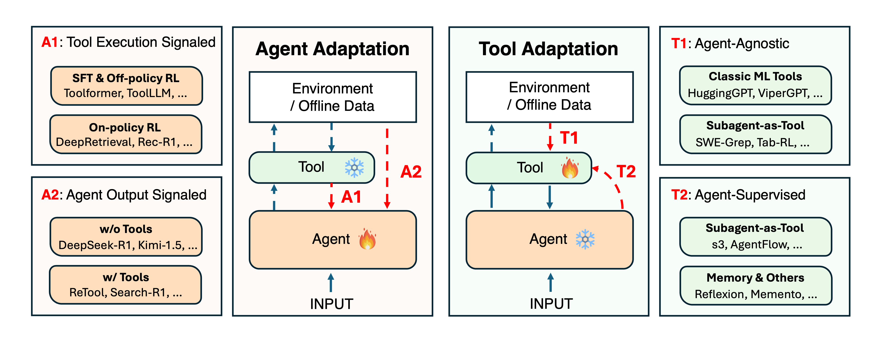
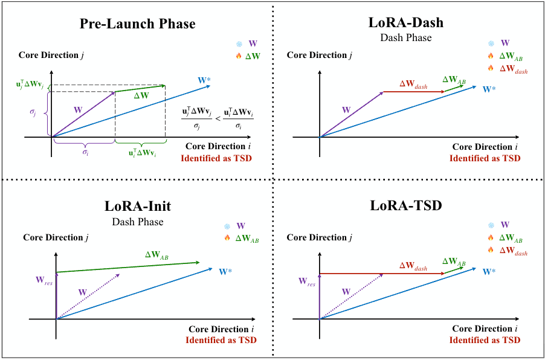
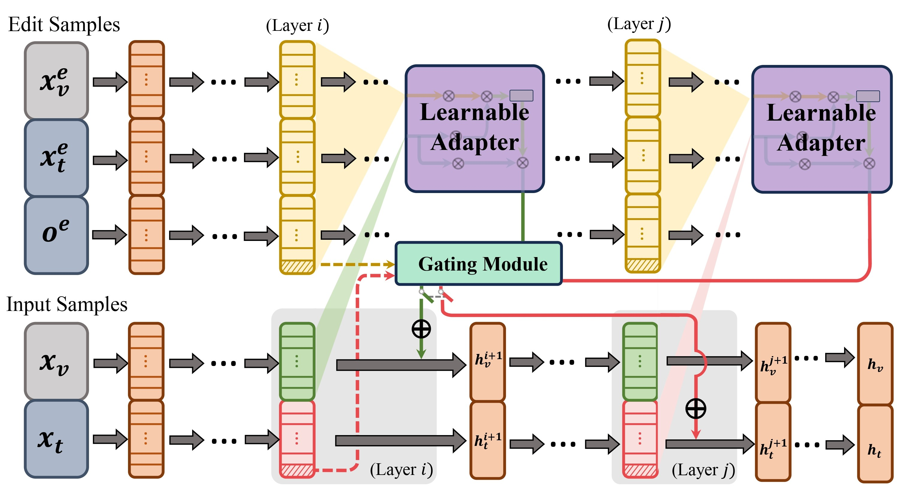
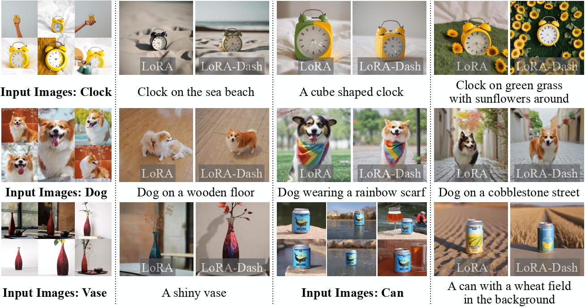
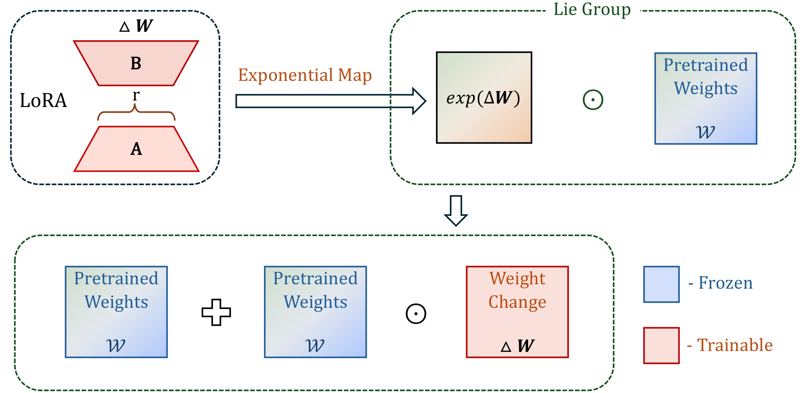
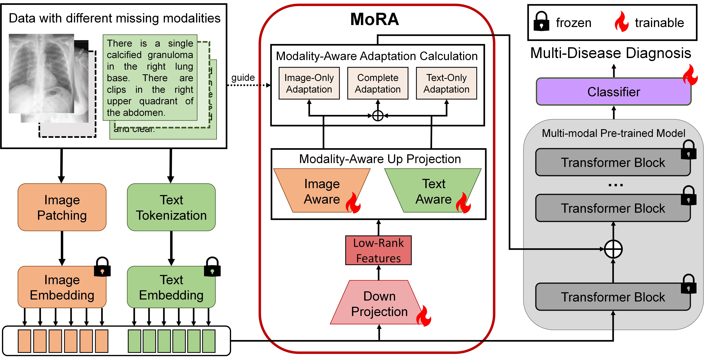

|
News
2026-01: One paper on Low-Rank Adaptation is accepted by IEEE TPAMI!
2025-12: Our paper "Adaptation of Agentic AI" is now on arXiv!
2025-08: I joined UIUC as a PhD student!
2025-07: One paper on Multimodal Model Editing is accepted by COLM 2025.
2025-06: One paper on Low-Rank Adaptation is accepted by ICCV 2025.
2025-01: One paper on Low-Rank Adaptation is accepted by ICLR 2025.
2024-06: I joined Harvard SEAS as a Researcher!
2024-05: I graduated from CMU!
2024-05: Two papers are accepted by MICCAI 2024.
|
|
Selected Publications [ Full List ]
(*Equal Contribution)
|
|

|
Adaptation of Agentic AI
Pengcheng Jiang*, Jiacheng Lin*, Zhiyi Shi*, Heng Ji, Yejin Choi, Dawn Song, Jimeng Sun, Jiawei Han
[Arxiv]
[Repo]
This paper provides a comprehensive framework for Agentic AI adaptation, categorizing how systems evolve to handle complex tasks. It introduces a unified taxonomy that distinguishes between Agent Adaptation (refining the model's internal reasoning/planning) and Tool Adaptation (optimizing external components like APIs and memory). By analyzing trade-offs in cost, modularity, and generalization, the work offers a practical roadmap for building more reliable and autonomous AI agents.
|
|

|
Task-Specific Directions: Definition, Exploration, and Utilization in Parameter Efficient Fine-Tuning
Chongjie Si*, Zhiyi Shi*, Shifan Zhang, Xiaokang Yang, Hanspeter Pfister, Wei Shen
IEEE Transactions on Pattern Analysis and Machine Intelligence (IEEE TPAMI), 2025
[Paper]
[Arxiv]
[Code]
We study task-specific directions (TSDs) as the key subspace that drives performance gains in parameter-efficient fine-tuning, and propose a unified framework to define, analyze, and utilize these directions in PEFT.
Building on this insight, we introduce LoRA-Dash and LoRA-Init, and further combine them into LoRA-TSD, achieving consistent and significant improvements over standard LoRA across extensive experiments.
|
|

|
DualEdit: Dual Editing for Knowledge Updating in Vision-Language Models
Zhiyi Shi*, Binjie Wang*, Chongjie Si, Yichen Wu, Junsik Kim, Hanspeter Pfister
Conference on Language Modeling (COLM), 2025
[Paper]
[Arxiv]
[Code]
DualEdit edits both textual and visual modalities in vision-language models at their most sensitive layers. A gating mechanism in the textual modality enables knowledge updates without harming the model's original abilities.
|
|

|
Unleashing the power of task-specific directions in parameter efficient fine-tuning
Chongjie Si*, Zhiyi Shi*, Shifan Zhang, Xiaokang Yang, Hanspeter Pfister, Wei Shen
International Conference on Learning Representations (ICLR), 2025
[Paper]
[Arxiv]
[Code]
We propose LoRA-Dash, a framework that leverages task-specific directions (TSDs) to maximize fine-tuning efficiency and improve task performance.
|
|

|
Generalized Tensor-based Parameter-Efficient Fine-Tuning via Lie Group Transformations
Chongjie Si, Zhiyi Shi, Xuehui Wang, Yichen Xiao, Xiaokang Yang, Wei Shen
International Conference on Computer Vision (ICCV), 2025
[Arxiv]
[Code]
We propose a generalization of matrix-based PEFT to higher-dimensional parameter spaces using Lie group modeling, ensuring structure-preserving updates and demonstrating improved performance across vision and language tasks.
|
|

|
MoRA: LoRA Guided Multi-modal Disease Diagnosis with Missing Modality
Zhiyi Shi, Junsik Kim, Wanhua Li, Yicong Li, Hanspeter Pfister
Conference on Medical Image Computing and Computer Assisted Intervention (MICCAI), 2024
[Paper]
[Arxiv]
[Code]
MoRA is a computationally efficient method for multi-modal disease diagnosis that adapts to missing modalities using modality-specific low-rank projections.
|
|
Professional Activities
Reviewer, Conference on Neural Information Processing Systems (NeurIPS), 2025.
Reviewer, IEEE Transactions on Artificial Intelligence.
Reviewer, IEEE Transactions on Medical Imaging.
Reviewer, Artificial intelligence in medicine.
Reviewer, Medical Physics.
|
|
{kind=link}